Installation von SonarPractice
Diese Anleitung führt dich durch die Installation der aktuellesten Beta.
Der Installationsassistent
Folge den Schritten des Assistenten, um die Anwendung auf deinem System einzurichten.
Installation unter Windows (SmartScreen)
Da SonarPractice ein unabhängiges Open-Source-Projekt ist, wird die Installationsdatei aktuell noch nicht von einem kostenpflichtigen Microsoft-Zertifikat begleitet. Windows zeigt daher beim ersten Start eine Warnmeldung an.
So setzt du die Installation fort:
Klicke im blauen (oder grauen) Fenster auf "Weitere Informationen".
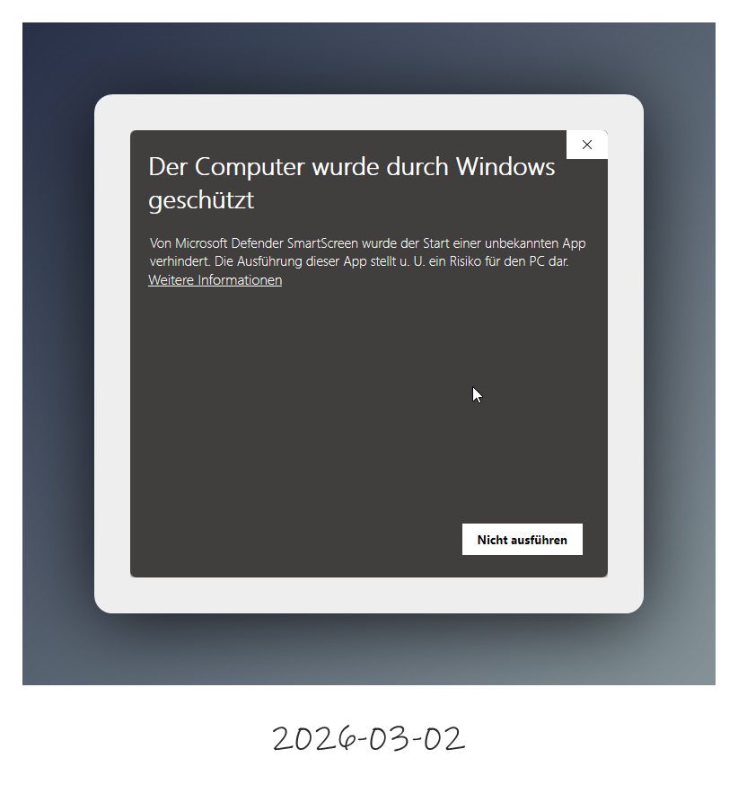
Wähle anschließend den Button "Trotzdem ausführen".
Keine Sorge: Die Software enthält keine schädlichen Funktionen. Die Warnung resultiert lediglich aus dem fehlenden (sehr kostspieligen) Zertifikat für kleine Entwickler.
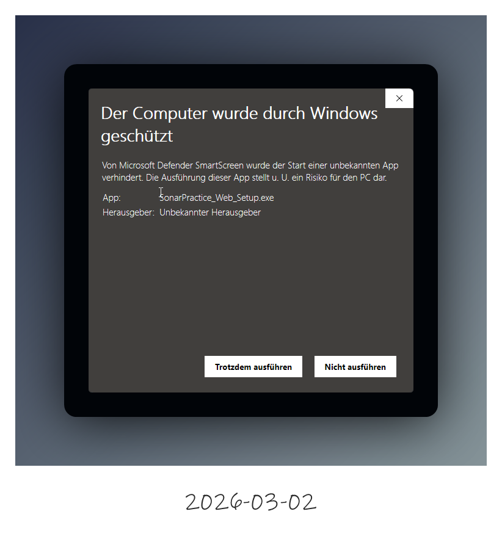
Schritt 1: Willkommen
Beim Start des Installers wirst du vom Einrichtungsassistenten begrüßt. Klicke auf Weiter, um fortzufahren.
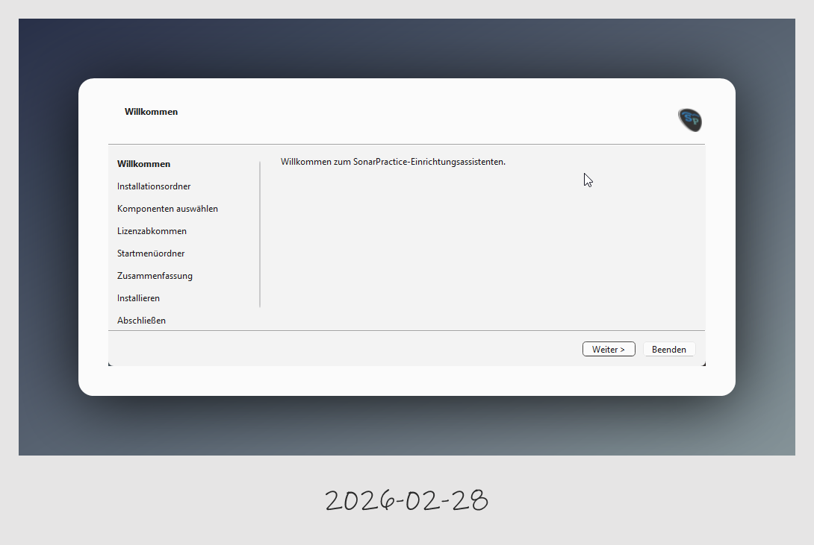
Schritt 2: Information
Hier findest du Informationen zur aktuellen Version, Links zum GitHub-Projekt und die Möglichkeit, das Projekt zu unterstützen.
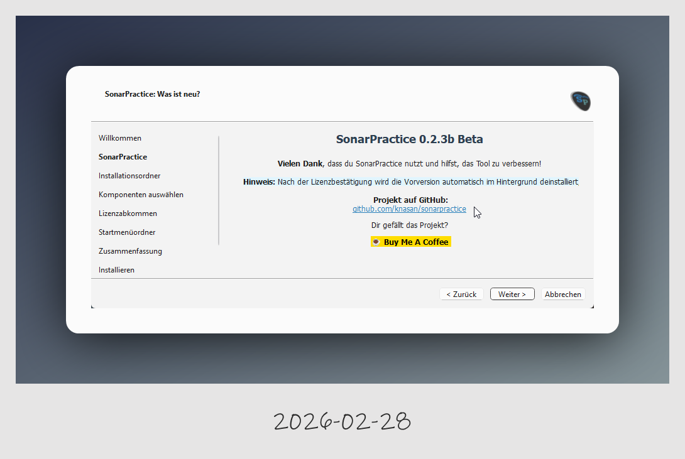
Schritt 3: Installationsordner
Wähle das Verzeichnis aus, in dem SonarPractice installiert werden soll. Der Standardpfad ist C:\Program Files\SonarPractice.
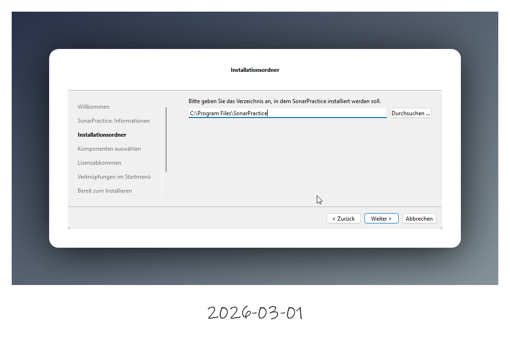
Schritt 4: Komponenten auswählen
In diesem Schritt kannst du festlegen, welche Bestandteile installiert werden sollen. Du siehst hier auch den erforderlichen sowie den verfügbaren Festplattenplatz.
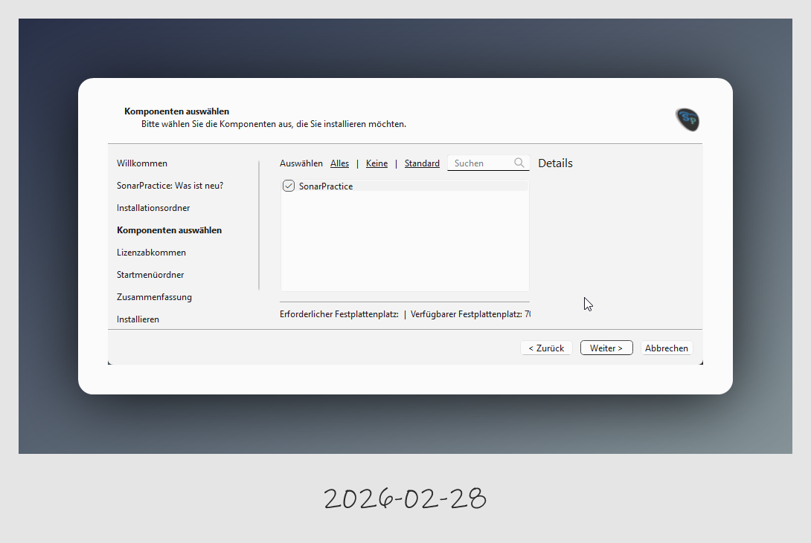
Schritt 5: Lizenzabkommen
Lies dir die GNU General Public License (GPL v3) durch. Du musst die Bedingungen akzeptieren, um mit der Installation fortzufahren.
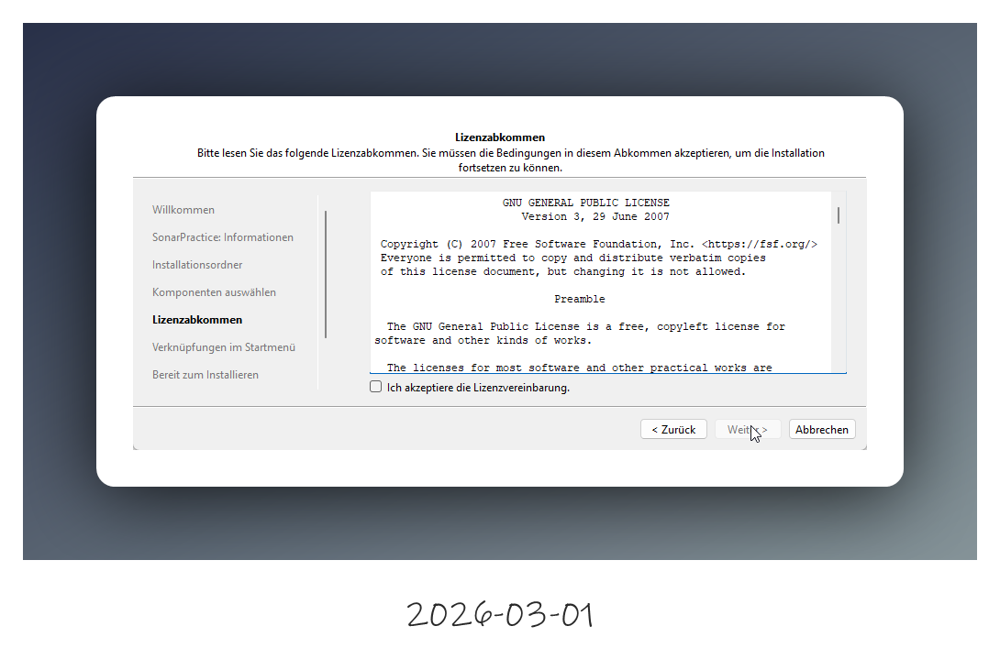
Schritt 6: Startmenü-Ordner
Wähle den Namen für den Ordner im Startmenü aus, unter dem die Verknüpfungen angelegt werden.
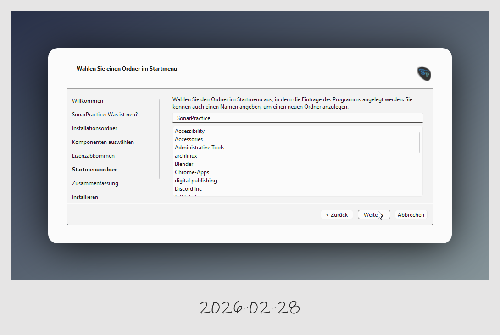
Schritt 7: Zusammenfassung
Bevor die Dateien geschrieben werden, erhältst du eine Übersicht über die geplante Installation. Für die Kernanwendung werden ca. 102 MB benötigt.
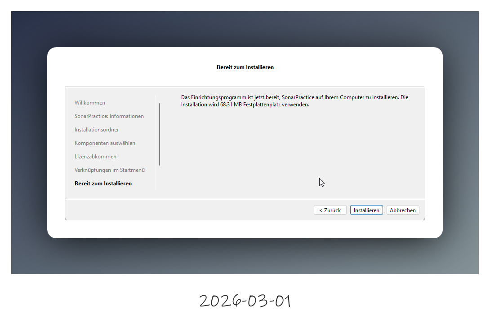
Schritt 8: Fortschritt
Der Installationsvorgang wird gestartet. Ein Balken zeigt dir den aktuellen Fortschritt der Komponenten-Installation an.
Der Installer holt sich aus dem Internet die aktuellste version.
Du benötigtst diesen Installer nicht mehr nach der Installation, das installierte maintenancetool.exe in %ProgramFiles%/SonarPractice/maintenancetool.exe kann das Programm immer aktualisiern.
Seit Version 0.2.6 ist das Update über das Menü Hilfe->Update verfügbar.
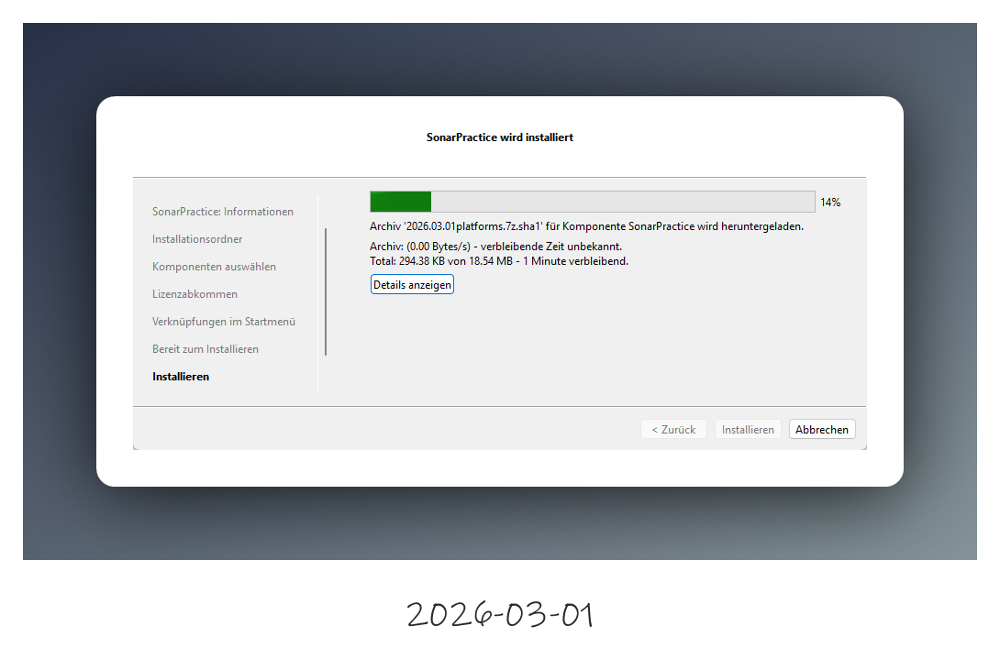
Schritt 9: Abschluss
Nach erfolgreicher Installation kannst du den Assistenten schließen. Aktiviere das Häkchen bei SonarPractice jetzt starten, um direkt mit der Konfiguration zu beginnen.
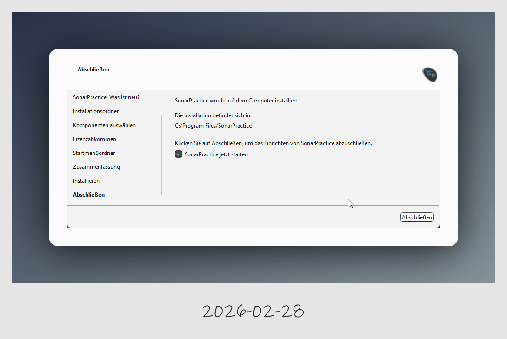